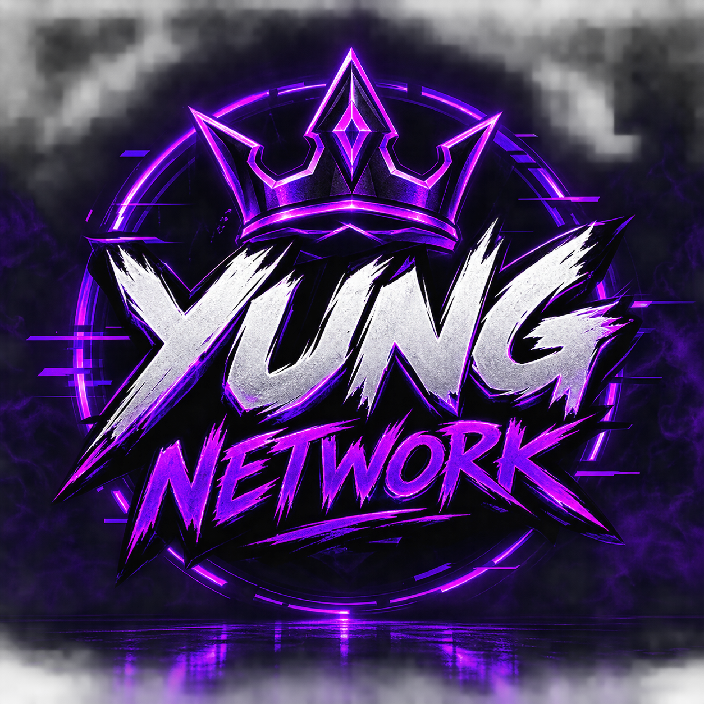

DISCORD
Unisciti alla nostra communityParla con noi, partecipa agli eventi, conosci nuovi amici e resta sempre aggiornato.
ENTRA ORA →
ENTRA NEL DISCORDPiù di una community, una famiglia.
Yung Network è la community di gaming e streaming dove giocatori, streamer e appassionati si incontrano, condividono la loro passione e creano nuove amicizie.
Parla con noi, partecipa agli eventi, conosci nuovi amici e resta sempre aggiornato.
ENTRA ORA →Organizziamo sessioni, tornei e serate in compagnia su PS5.
SCOPRI DI PIÙ →Live, contenuti esclusivi e tanto altro sul nostro canale Twitch.
GUARDA ORA →Le persone che fanno crescere la community.
Visione e direzione della community.
Organizzazione e supporto.
Un ambiente accogliente per tutti.
Presenza e aiuto alla community.
I profili dello staff possono essere gestiti dal pannello admin.
Caricamento news dal network…
Le notizie pubblicate dagli amministratori appariranno qui.
Ti serve una presenza online o un server Discord fatto bene? Posso aiutarti a realizzarlo.
Siti web personalizzati, moderni e responsive, pensati per presentare il tuo progetto e funzionare bene anche da telefono.
Bot su misura per automatizzare attività, gestire comandi e rendere la tua community più organizzata.
Server configurati con canali, categorie, ruoli, permessi, moderazione e strumenti adatti alle esigenze della tua community.
Contattami per siti web, bot Discord e server completi di canali, ruoli e permessi.
Entra nella community, presenta te stesso e trova persone con cui giocare.
ENTRA NEL DISCORD ↗Un click per iniziare. La tua prossima squadra potrebbe essere qui.
SEGUICI SUI SOCIAL.
Trova Yung Network sulle nostre piattaforme.
Gli altri link social appariranno qui quando li aggiungi dal pannello admin.